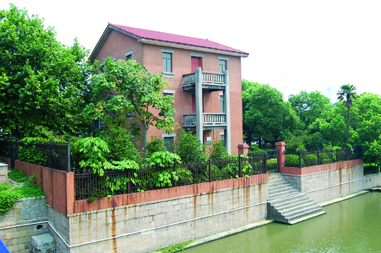

嘉兴市文物保护网 · 市级文物保护单位 · 2014-06-19 · 原文

穆家洋房位于嘉兴市南湖区建设街道城东社区环城东路508号，南临壕河。民国初，由上海籍商人穆恕再建造，又因房前栽四棵颜色各异的梅花树得名“四梅居”。1937年日军占领嘉兴后，洋房被日本人占用，抗战胜利初被国民党军队征用，1947至1964年间，曾作嘉兴县邮政局，2001年被辟为嘉兴邮电博物馆。洋房为三层楼房，坐北朝南，砖混结构，占地面积127平方米，通面阔11.8米，通进深10.8米。墙体用红砖砌筑，四面开有方形窗，每层朝南均有阳台，构件装饰为西洋式风格。屋顶为悬山顶，铺设红色洋瓦。四周有庭院，种有花木。穆家洋房是近代典型的西式建筑，也曾作为近代邮政机构，对于研究嘉兴的近代建筑、邮政发展史都有较高的科学和历史价值。2009年公布为嘉兴市级文物保护单位。